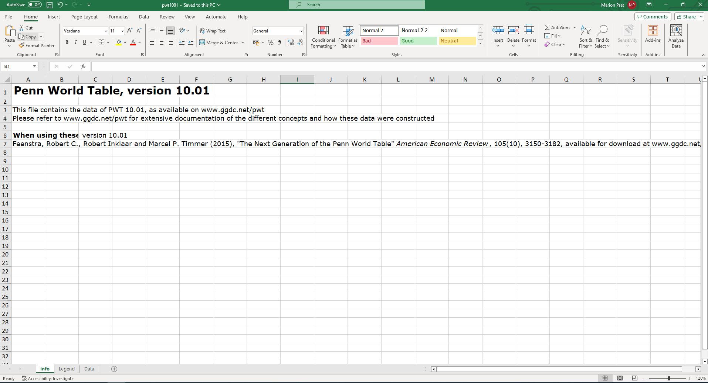

The Penn World Table in Excel
2024-04-24
Introduction
Note that this resource is still a work in progress. You can write to me at: marion.prat@bristol.ac.uk.
In this tutorial, we will show how to extract useful empirical facts about long-run growth from the Penn World Table (Feenstra, Inklaar, and P.Timmer 2015) using basic functions and operations in Excel. The PWT 10.01 contains data on GDP and its components, as well as demographic characteristics for 183 countries from 1950 to 2019 (although for some countries the data may not be available as early as 1950).
Download the PWT 10.01 Excel spreadsheet here and save it in a folder entitled PWT. The spreadsheet contains three sheets: “Info”, “Legend” and “Data”.

Before going any further, check the definition of the variables in the “Legend” sheet. Why are there so many different measures of real GDP? How do they differ?
The “Data” sheet contains the dataset.
Each row corresponds to observations for a given country in a given year and each column represents a variable. Although this layout may appear confusing at first, it is in fact computer friendly:
- First, it is easy to use a Power Query in the Data tab (accessed via “Get Data”) to create a new Excel sheet containing any subset of the data you are interested in analysing. This is what we are going to do in this tutorial.
- Second, it is compatible with how statistical software (such as R) work as they store variables in column vectors.